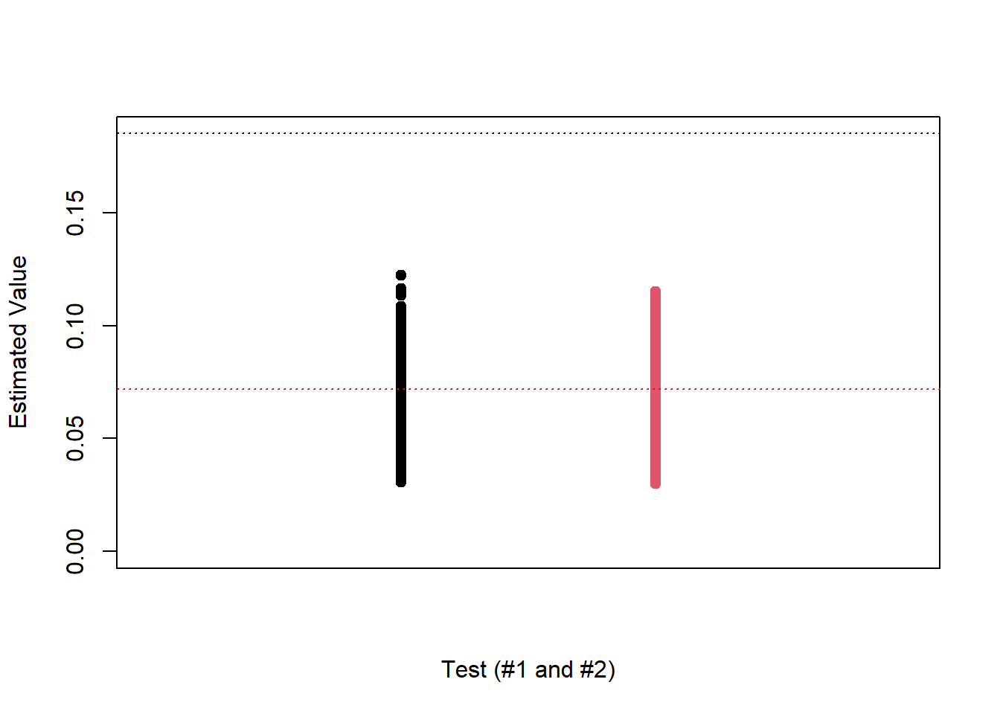

Here, we briefly cover permutation tests. These are a class of nonparametric hypothesis tests for checking equality of distributions. Let’s start with an example.
Suppose we sample \(n\) observations from \(F\), denoted \((X_{1},\ldots,X_n)\) and \(m\) from \(G\), denoted \((X_{n+1},\ldots,X_{n+m})\). Then, we wish to test \[H_0 : F=G \qquad vs. \qquad H_1: F\neq G.\] Suppose we have some test statistic which is a measure of a difference between groups, for example, the Kolmogrov-Smirnoff statistic: \[T^*= T(\ (X_{1},\ldots,X_n),\ (X_{n+1},\ldots,X_{n+m})\ )=||F_m-G_n||.\]
Here, \(T\) measures the distance between the empirical distributions from each sample. Recall then that if we want to do a hypothesis test, we need to compute the distribution of \(T\) under the null hypothesis.
Under the null hypothesis, we have that \((X_{1},\ldots,X_n)\) is equal in distribution to \((X_{n+1},\ldots,X_{n+m})\). This means that the labels 1,…,\(n+m\) are arbitrary, in the sense that all observations come from the same population, so the division into the two groups holds no meaning. Furthermore, for any permutation \(\pi_1,\ldots,\pi_{n+m}\), it holds that \((X_{\pi_1},\ldots,X_{\pi_n})\) is equal in distribution to \((X_{\pi_{n+1}},\ldots,X_{\pi_{n+m}})\). This implies that \(T(\ (X_{1},\ldots,X_n),\ (X_{n+1},\ldots,X_{n+m})\ )\) is equal in distribution to \(T(\ (X_{\pi_1},\ldots,X_{\pi_n}),\ (X_{\pi_{n+1}},\ldots,X_{\pi_{n+m}})\ )\). This fact motivates the following procedure:
Draw a random permutation \(\pi\) from the set of \((n+m)!\) permutations
Repeat 1 and 2 \(K\) times to obtain \(K\) values \(T_1,...,T_K\)
Let \(\mu_K\) be the empirical distribution of \(T^*,T_1,...,T_K\)
Compute the p-value: \(\Pr_{\mu_K}(X\geq T^*)\)
The above is a two-sample permutation test! Let’s add some rigor.
3.2 The Permutation Lemma
Consider again, \(X_{1},\ldots,X_{n}\sim F\) and \(X_{n+1},\ldots,X_{n+m}\sim F\). Denote by \(Y_1,\ldots,Y_{n+m}\) the order statistics of the combined sample \(X_{1},\ldots,X_{n+m}\). Now, let \(V_i=1(Y_i\in \{X_{1},\ldots,X_{m}\})\).
Now, note that \(Y_1,\ldots,Y_{n+m}=X_{\pi_1},\ldots,X_{\pi_n},X_{\pi_{n+1}},\ldots,X_{\pi_{n+m}}\) for some permutation \(\pi\). Furthermore, \(\pi\) has to be uniformly distributed across all possible permutations, on account of the \(X_i\) being iid. Therefore, the probability of a given permutation generated by the order statistics is \(1/(n+m)!\).
Next, note each permutation generates a \((V_1,\ldots,V_{n+m})\). Now, the probability of observing any \((V_1,\ldots,V_{n+m})\) is the number of permutations such that the same \(m\) elements are in the first sample. This is given by \(n!m!\). Given that the permutations are uniformly distributed, we have that the probability that \((V_1,\ldots,V_{n+m})=(v_1,\ldots,v_{n+m})=n!m!/(n+m)!\). Therefore, under the null hypothesis, every permutation is equally likely and so the distribution of the vector \((V_1,\ldots,V_n)\) is uniform over \(\binom{n+m}{m}\). This has been referred to as the permutation lemma.
3.3 Adding in \(T\)
Now, we may ask where \(T\) comes in. Let \(\mathbf{X}_1=(X_{1},\ldots,X_n)\) and \(\mathbf{X}_2=(X_{n+1},\ldots,X_{n+m})\). Let \(\mathbf{Y}\) be the combined sample order statistics and \(\mathbf{V}\) be the label indicators. We can write:
\[\begin{align*}
\Pr(T(\mathbf{X}_1,\mathbf{X}_2)\geq t|\mathbf{Y})&=\Pr(T(\mathbf{V},\mathbf{Y})\geq t|\mathbf{Y})\\
&=\sum_{i=1}^{\binom{n+m}{m}}\Pr(T(v,\mathbf{Y})\geq t,\mathbf{V}=v|\mathbf{Y})\\
&=\sum_{i=1}^{\binom{n+m}{m}}1(T(v,\mathbf{Y})\geq t)\Pr(\mathbf{V}=v|\mathbf{Y})\\
&=\#\text{ labellings such that } T(v,\mathbf{Y})\geq t\big / \binom{n+m}{m} .
\end{align*}\]
This probability is: the probability that we observe a value for our statistic at least as extreme as, assuming that the null hypothesis is true, given the set of values that we have observed. Now then, \[p=\#\text{ labellings such that } T(v,\mathbf{Y})\geq t)\big / \binom{n+m}{m}\] is the p-value, conditional on the combined sample order statistics we observed.
We should take \(K\) as large as feasible. 1000 is a rule of thumb.
The test statistic chosen has a large impact on the power. It is important to choose a test statistic that will perform well for the problem at hand. For instance, does it need to be robust, efficient computationally? What distributional differences are we most concerned about?
Of course in simple problems, they will have lower power than optimal tests. However, they are suitable for situations where an optimal test is not easily derived, or the sample size is too low for asymptotic approximations. They are also easy to implement and relatively intuitive (you don’t need to understand the CLT.)
Permutation tests are mathematically valid because the data are exchangeable under the null hypothesis. We have to be careful that this is directly implied by our assumptions and null hypothesis. For instance, in the setup from the introduction, the null hypothesis $ E_F(X)=E_G(X)$ is not enough to give exchangeability of the data, since we have only assumed the data come from \(F\) and \(G\), and it could be that \(F\neq G\) but \(E_F(X)=E_G(X)\). In that case, assuming \(H_0\) alone is not enough to imply that \((X_{1},\ldots,X_n)\) is equal in distribution to \((X_{n+1},\ldots,X_{n+m})\). However, if in addition, we assume that \(F\) and \(G\) are in the family of normal distributions with variance 1, then we have that \((X_{1},\ldots,X_n)\) is equal in distribution to \((X_{n+1},\ldots,X_{n+m})\).
3.5 Permutation test for independence
Suppose that instead we observe \(((X_1,Y_1),\ldots,(X_n,Y_n))\sim F_{XY}\), where \(X_i\sim F_X\) and \(Y_i\sim F_Y\). Suppose that we wish to test if \(X_i\) are independent of \(Y_i\). One way to phrase this is \[H_0 : F_{XY}=F_XF_Y \qquad vs. \qquad H_1: F_{XY}\neq F_XF_Y.\] Now, under the null hypothesis, by definition, conditioning on \(X_i\) tells us nothing about the distribution of \(Y_i\). Therefore, \(((X_1,Y_1),\ldots,(X_n,Y_n))\) is equal in distribution to \(((X_1,Y_{\pi_1}),\ldots,(X_n,Y_{\pi_n}))\) for any permuation \(\pi\). Then, still under the null hypothesis, the pairings we observed were arbritrary. In fact, it is easy to see that the pairings are uniformly distributed accross the permutations of the \(Y_i\)s. In this case, we draw many ``permutation samples’’ \(((X_1,Y_{\pi_1}),\ldots,(X_n,Y_{\pi_n}))\), and compute some statistic \(T\) which measures the dependence between \(X\) and \(Y\). For instance, we may use \[\sup_{(x_1,x_2)\in\mathbb{R}^2}|F_{XY}((x_1,x_2))-F_X(x_1)F_Y(x_2)|.\] This test is implemented in the robusTest package.
mv.ks.statistic =function(X, Y) { n =length(X)# The matrix under the assumption of independence is simply the # product of [i/n][j/n] for the (i,j)-th entry of the matrix indep_mat =as.matrix((1:n)/n) %*%t(1:n/n)# Return the maximum differencemax(abs(robusTest::ecdf2D(X, Y)$ecdf - indep_mat))}set.seed(31415) # Generate X and Y dependent; X and W independentK =10000n =100X =rnorm(n)Y =4*X +rnorm(n, 0, 3)W =rexp(n)# Compute the statisticst1 =mv.ks.statistic(X, Y)t2 =mv.ks.statistic(X, W)results_mat =matrix(nrow = K, ncol =2)for(ii in1:K) { Xs = X[sample(1:n, n)] results_mat[ii, ] =c(mv.ks.statistic(Xs, Y),mv.ks.statistic(Xs, W))}# Plot the resultsmatplot(y = results_mat, x =matrix(c(rep(1, nrow(results_mat)),rep(2, nrow(results_mat))),nrow =nrow(results_mat)),pch =19,ylab ="Estimated Value",xaxt ='n', xlim =c(0, 3),ylim =c(0, max(c(results_mat, t1, t2))),xlab ='Test (#1 and #2)')abline(h = t1, lty =3, col ='black')abline(h = t2, lty =3, col ='red')

We could just directly use the function: robusTest::indeptest(X,Y).